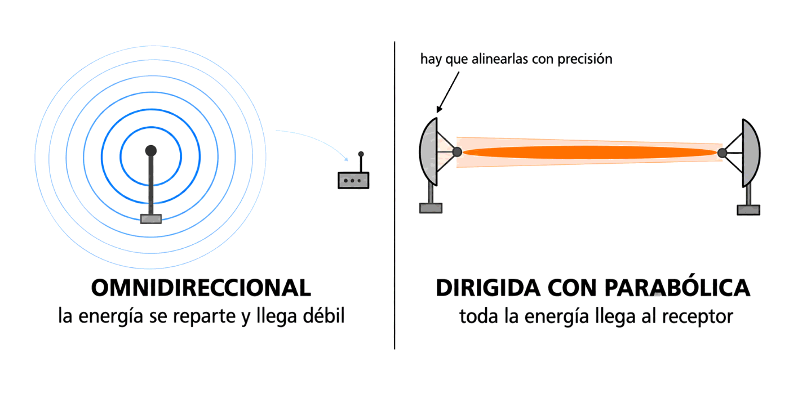
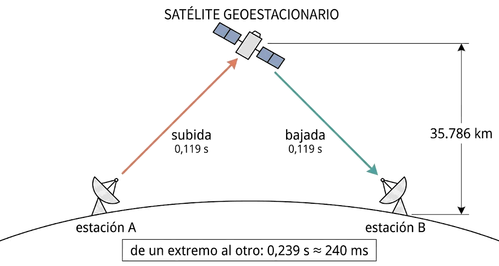
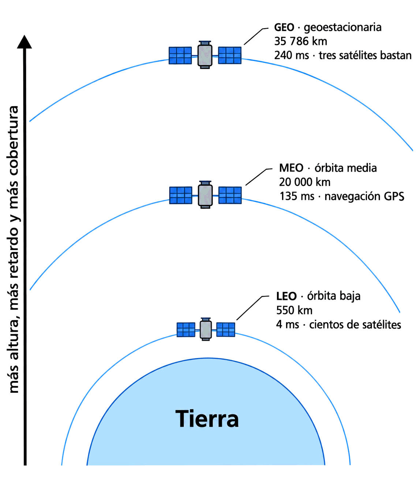

Contenido del día
1. Qué son las microondas
Además de su aplicación en los hornos, las microondas permiten transmisiones terrestres y con satélites. Estos son los datos del libro:
| Característica | Valor según el libro |
|---|---|
| Banda de frecuencias | Entre 1 y 10 GHz |
| Velocidad de transmisión | Del orden de 10 Mbps |
| Propagación | En línea recta, enfocable en un haz estrecho |
| Frente a obstáculos | No los atraviesan bien |
| Uso en redes locales | Wi-Fi: 2,4 y 5 GHz |
Fíjate en que el Wi-Fi está aquí dentro: una red inalámbrica es un enlace de microondas, aunque no lo parezca porque no hay ninguna parabólica a la vista. Eso se ve mañana.
Es casi con seguridad una errata por 1 000 MHz, es decir, 1 GHz, que es justo donde el libro sitúa el principio de la banda. Si te lo preguntan, la idea correcta es: a partir de aproximadamente 1 GHz la propagación es en línea recta.
2. El haz y la antena parabólica
Aquí está la idea central del día. Como las microondas viajan en línea recta, se pueden enfocar en un haz de pequeña anchura, y eso se hace con una antena parabólica.
Concentrar toda la energía en un haz pequeño produce una relación señal/ruido muy alta: la amplitud del ruido puede ser muy pequeña comparada con la de la señal.
Con Shannon en la mano, eso es dinero: más S/N es más capacidad en el mismo ancho de banda. Un enlace de microondas bien apuntado puede dar mucha más velocidad que una emisión omnidireccional de la misma potencia, porque no está desperdiciando energía en las direcciones donde no hay nadie escuchando.
Las antenas del emisor y del receptor deben estar muy bien alineadas entre sí. Un haz estrecho que apunta dos grados de más no llega a ninguna parte. Por eso los enlaces de microondas se instalan sobre mástiles rígidos y se realinean después de un temporal.

OMNIDIRECCIONAL DIRIGIDA (parabólica)
╲ │ ╱ ▐▶────────────────▶◀▌
── ● ── la energía ▐ haz estrecho ▌
╱ │ ╲ se reparte ▐ toda la energía ▌
y llega débil llega fuerte
pero hay que APUNTAR3. Visión directa, obstáculos y repetidores
La contrapartida de propagarse en línea recta es evidente: a diferencia de las ondas de radio, las microondas no atraviesan bien los obstáculos. Si hay un edificio, una colina o un bosque por medio, no hay enlace.
De ahí la consecuencia que da el libro: es necesario situar antenas repetidoras cuando se quieren realizar comunicaciones a largas distancias. Un enlace de microondas de 200 km no es un salto, son varios saltos encadenados de torre en torre.
💡 Ampliación: hasta dónde se ve, en números
Esta fórmula no sale del libro: es geometría aplicada al radio terrestre, y la usan a diario los instaladores de radioenlaces. La distancia al horizonte desde una antena a h metros de altura es, aproximadamente:
Y como en un enlace hay dos antenas, el alcance es la suma de los dos horizontes:
| Altura de cada antena | Horizonte de una | Alcance del enlace |
|---|---|---|
| 10 m | 13 km | 26 km |
| 30 m | 22,6 km | 45 km |
| 100 m | 41,2 km | 82 km |
Compara con el dato del libro: la tabla 3.5 daba 80 km entre repetidores para las microondas. Ahora sabes de dónde sale ese número: es, más o menos, lo que se ve desde una torre de cien metros.
4. Comunicaciones por satélite
Un satélite de comunicaciones es, en el fondo, un repetidor de microondas colocado muy alto. Tan alto que ve a la vez a media Tierra, así que resuelve de un golpe el problema del horizonte y el de los obstáculos.

estación A SATÉLITE estación B
▲ ╲ ▄▄▄▄ ╱ ▼
│ ╲ subida ▐ ▌ bajada ╱ │
│ ╲───────────────▶ ▐ ▌ ───────────────▶╱ │
│ ▀▀▀▀ │
└──────────── 36 000 km de altura ──────────────────┘Y aquí aparece el precio, que el libro enuncia sin rodeos:
En las comunicaciones por satélite hay que tener en cuenta que siempre existe un pequeño retardo, porque la señal tarda aproximadamente 0,3 segundos en llegar y volver. Para algunas aplicaciones de envío y recepción de datos, esa espera puede resultar inaceptable.
Trescientos milisegundos parecen poco escritos, pero son muchísimo para una red. Piensa que ayer medías enlaces de cobre en nanosegundos.
5. El retardo, con números
El dato del libro se puede comprobar, y conviene hacerlo porque así se entiende de dónde sale y por qué aparecen cifras distintas según quién lo cuente.
Un satélite geoestacionario está a 35 786 km de altura. Las ondas viajan a 300 000 km/s.
subida 35 786 km ÷ 300 000 km/s = 0,119 s
bajada 35 786 km ÷ 300 000 km/s = 0,119 s
───────
de un extremo al otro 0,239 s ≈ 240 msEso es lo que tarda tu voz en llegar al otro interlocutor: unos 240 ms, que redondeados son los 0,3 s del libro.
ping.
Por eso encontrarás citadas las tres cifras: 120 ms por trayecto, 240 ms de extremo a extremo y 480 ms de ida y vuelta. Ninguna es errónea: hay que mirar qué mide cada una.
Qué aplicaciones lo notan
| Aplicación | ¿Aguanta 240-480 ms? | Por qué |
|---|---|---|
| Descargar un archivo, correo, copias de seguridad | ✅ Sí | Importa el caudal, no la espera inicial |
| Navegar por páginas web | ⚠️ Regular | Cada elemento de la página añade su propia espera |
| Videollamada | ⚠️ Incómoda | Medio segundo de desfase obliga a hablar por turnos |
| Telefonía en tiempo real | ❌ Mala | Se pisan las frases: es el clásico «corte» de las conexiones vía satélite |
| Juegos en red de acción | ❌ Inviable | La partida va medio segundo por detrás de lo que ocurre |
| Control remoto de maquinaria | ❌ Peligroso | Reaccionas a lo que pasó hace medio segundo |
Esta tabla es exactamente lo que el libro resume como «para algunas aplicaciones este tiempo de espera puede resultar inaceptable». El satélite no es lento: tiene mucho caudal. Lo que tiene es mucha latencia, que es otra cosa, como viste en el Mes 1.
6. Órbitas: GEO, MEO y LEO
| Órbita | Altura | Retardo de extremo a extremo | Cobertura | Ejemplo de uso |
|---|---|---|---|---|
| GEO geoestacionaria |
35 786 km | ≈ 240 ms | Un tercio del planeta con tres satélites; parece fija en el cielo | Televisión, telefonía rural |
| MEO media |
≈ 20 000 km | ≈ 135 ms | Necesita una constelación | Navegación: GPS y Galileo |
| LEO baja |
≈ 550 km | ≈ 4 ms | Cada satélite pasa deprisa: hacen falta cientos o miles | Internet por satélite actual |
Cuanto más bajo, menos retardo y menos potencia hace falta… pero menos superficie ve cada satélite y más rápido se mueve respecto al suelo. Un satélite GEO permite apuntar una parabólica fija y olvidarse; uno LEO obliga a que la antena lo siga y a que la red vaya pasando la conexión de un satélite al siguiente.
Es el mismo tipo de compromiso de toda la semana: lo que se gana por un lado se paga por otro.

7. Cuándo compensa cada solución
El libro da la razón de fondo para lo inalámbrico en general, y vale especialmente aquí: resulta de mucha utilidad cuando sale muy costoso tender hilos de comunicación en zonas geográficas de difícil acceso.
| Escenario | Solución razonable | Por qué |
|---|---|---|
| Dos naves separadas por una carretera pública | Radioenlace de microondas | Hay visión directa y cruzar la vía con obra sería carísimo o imposible |
| Oficina en una isla sin cable submarino | Satélite | No hay alternativa terrestre |
| Barco, avión o plataforma petrolífera | Satélite | El extremo se mueve: no hay dónde anclar un cable |
| Cobertura temporal de un evento | Radioenlace o satélite | Se monta en horas y se desmonta igual |
| Dos edificios de un campus, 300 m con visión directa | Fibra, si se puede canalizar | Más capacidad, sin licencias ni meteorología; el radioenlace es el plan B |
| Enlace crítico entre dos centros de datos | Fibra, y radioenlace como respaldo | El respaldo debe usar un medio distinto, para que no falle por la misma causa |
8. Resumen y errores frecuentes
- Microondas: 1 a 10 GHz, del orden de 10 Mbps según el libro, propagación en línea recta.
- La antena parabólica concentra la energía en un haz: da una relación señal/ruido muy alta y exige alineación.
- No atraviesan obstáculos: hacen falta visión directa y repetidores para largas distancias.
- Un satélite es un repetidor muy alto. El retardo son unos 240 ms de extremo a extremo, los 0,3 s del libro; 480 ms de ida y vuelta.
- GEO 35 786 km y 240 ms · MEO 20 000 km y 135 ms · LEO 550 km y 4 ms.
- El satélite no tiene poco caudal: tiene mucha latencia. Por eso falla en tiempo real y no en descargas.
- Lo inalámbrico brilla donde tender cable es caro o imposible.
| Se dice… | …pero en realidad |
|---|---|
| «El satélite es lento» | Tiene mucha latencia, no poco caudal. Descargar va bien; hablar, no |
| «Con más potencia se arregla el retardo» | El retardo lo impone la distancia y la velocidad de la luz. No hay potencia que lo baje |
| «Una parabólica capta más señal y ya está» | También exige alineación precisa: un haz estrecho mal apuntado no llega |
| «Las microondas atraviesan obstáculos como la radio» | No: por eso necesitan visión directa y repetidores |
| «Todos los satélites tienen 240 ms» | Solo los GEO. En órbita baja el retardo baja a unos pocos milisegundos |
| «Un enlace inalámbrico no depende del tiempo» | La lluvia intensa degrada los radioenlaces, y más cuanto mayor es la frecuencia |
| «Si hay visión directa, radioenlace siempre» | Si se puede canalizar fibra, suele ganar la fibra: más capacidad y sin meteorología |
9. Repaso con flashcards
Piensa la respuesta antes de girar la tarjeta.
Quiz del día
15 preguntas · 23 minutos · Contesta sin volver a la teoría
El cronómetro no corre mientras lees: arranca al llegar aquí, al pulsar «Empezar quiz» o al marcar tu primera respuesta.
Resultados
Respuestas correctas: 0 / 0
Respuestas incorrectas: 0
Vas a calcular el retardo de las tres órbitas y luego a medir con ping la latencia real
de tu conexión contra destinos cada vez más lejanos. Uno de ellos se parece sospechosamente a un
satélite.
→ Ir al laboratorio del Día 2 (72 min)
Wi-Fi: las microondas dentro de casa. Estándares, tasa adaptativa, los trece canales de la banda de 2,4 GHz y por qué todo el mundo repite «1, 6 y 11».
Tarea de calentamiento (5 min): entra en la configuración de tu router y mira en qué canal está emitiendo. Si dice «automático», anótalo también.